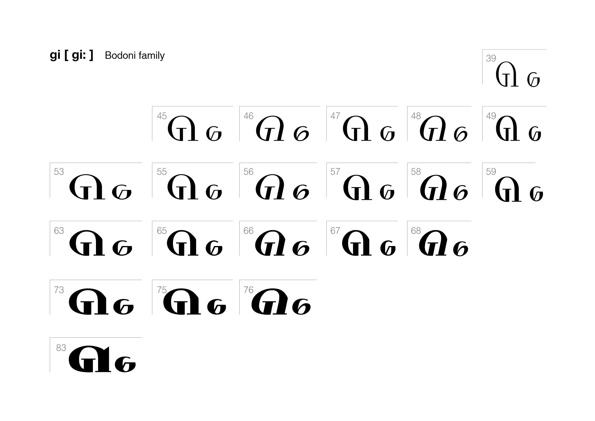
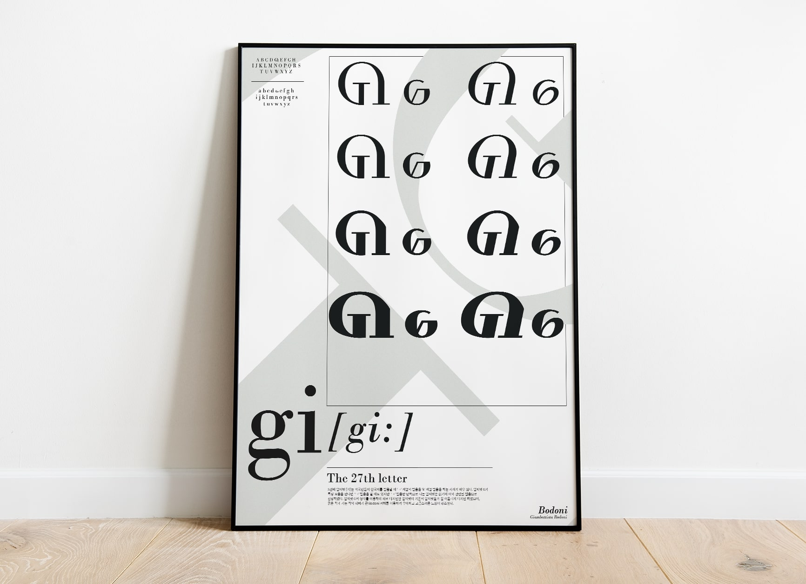
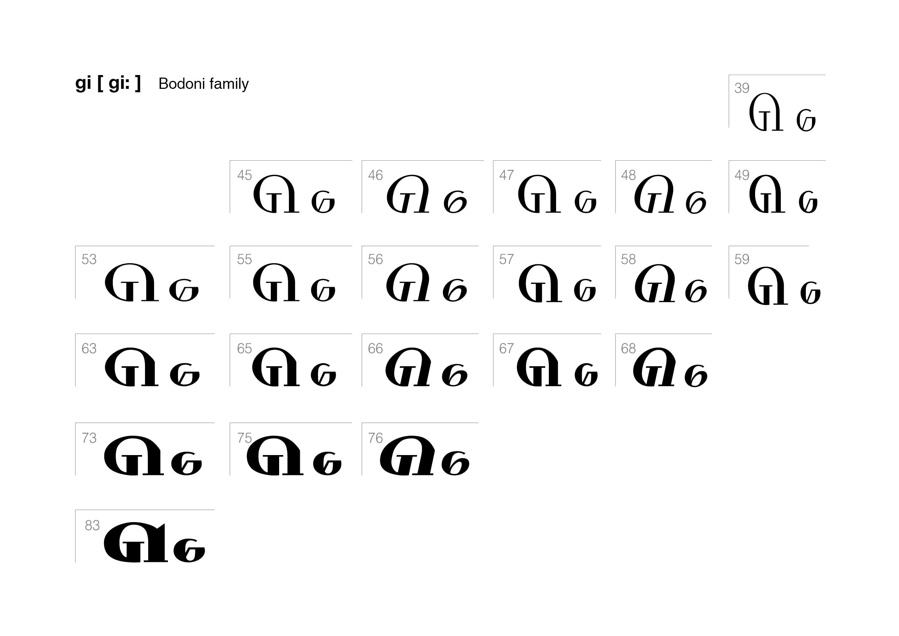
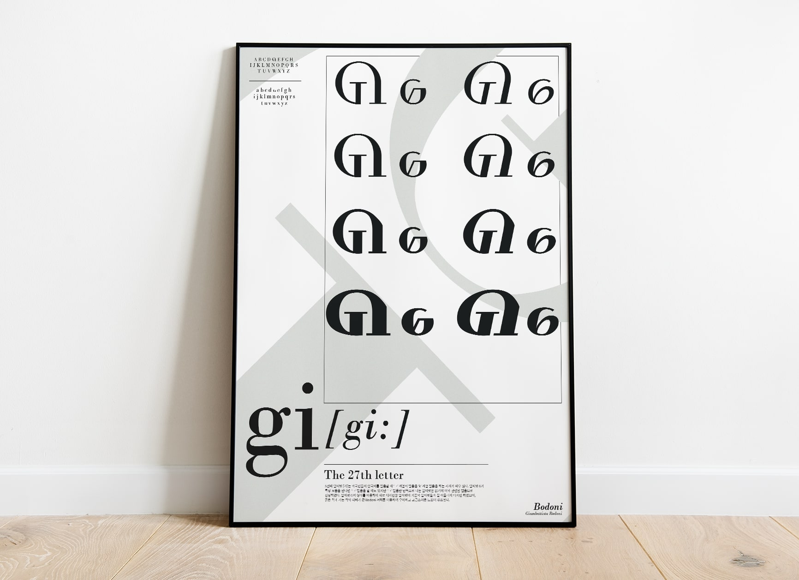

27번째 알파벳 디자인
5번째 알파벳 [기]는 외국인들이 [기]를 [키]로 발음하는 문제점을
개선하고자
알파벳 G의 형태를 이용하여 새롭게 디자인한 알파벳이다.
D와 E사이에 있어도 자연스럽게 이어져 보이는 디자인이 특징이며
보도니 서체를 이용해 우아하고 고급스러움이 강조되는 것이
특징이다.
 



타이포그래피 기초｜개인 작업
23.03 - 23.06